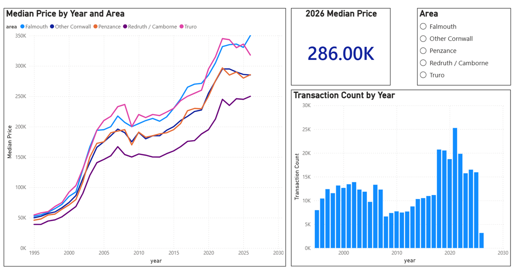
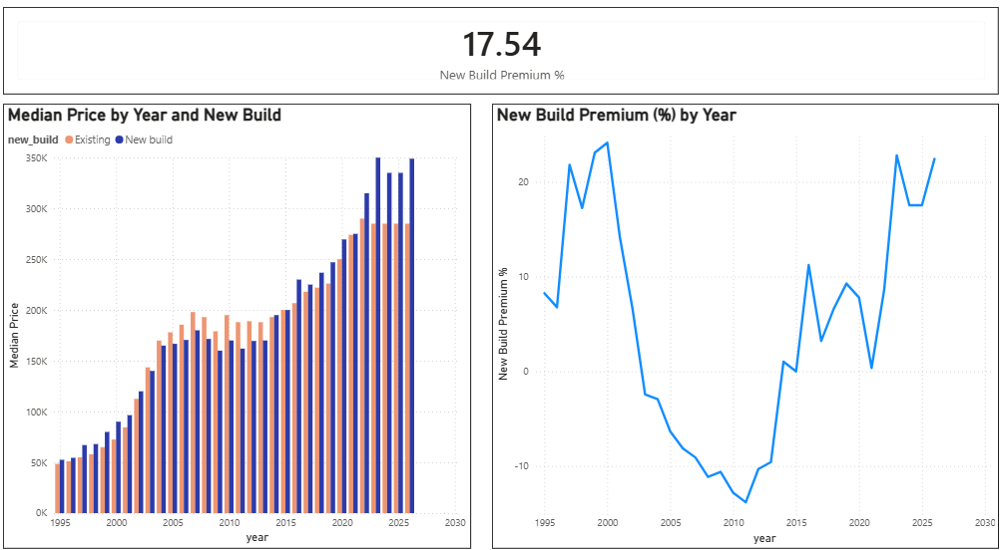
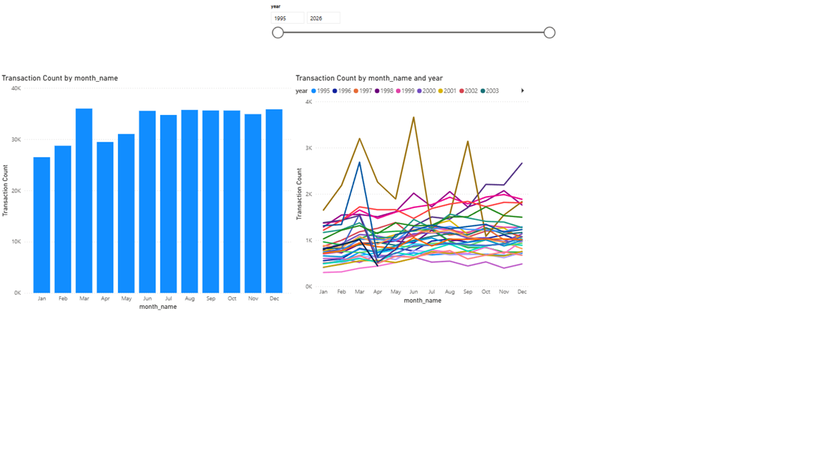
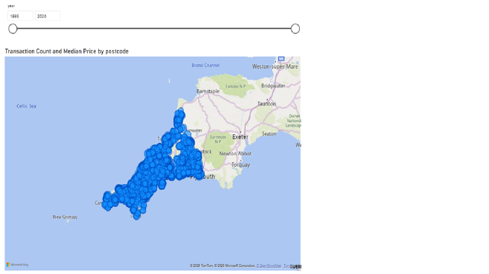

How house prices in Cornwall have outpaced local wages — and what 30 years of data reveals about who can still afford to live here.
Cornwall has become one of the least affordable places to live in England relative to what people earn there. A surge in second homes and holiday lets has collided with stagnant local wages, pushing ownership out of reach for many residents.
This project quantifies that gap: how far house prices have pulled away from local wages since 1995, and what that means for the people who live and work here.
| Area | 1995 Median | 2025 Median | Growth |
|---|---|---|---|
| Truro | £54,500 | £336,000 | +517% |
| Falmouth | £52,500 | £330,625 | +530% |
| Penzance | £45,950 | £280,000 | +509% |
| Other Cornwall | £49,950 | £286,000 | +472% |
| Redruth / Camborne | £39,000 | £245,000 | +528% |
The county is not uniform. In 2025, a buyer in Truro or Falmouth paid around £90,000 more than a buyer in Redruth or Camborne for a comparable home. That gap has widened over time — all areas have grown substantially, but the coastal and city markets have pulled furthest ahead.
Truro commands the highest prices as Cornwall's only city and administrative centre. Falmouth follows closely, driven by its university, coastal appeal, and concentration of second-home buyers. Redruth and Camborne — historically the county's industrial heartland — remain the most accessible entry point, though even here a 528% rise from a lower base has put ownership out of reach for many local workers.
Completions are not spread evenly across the year. March is consistently the busiest month, driven by buyers completing before the end of the tax year. January and February are the quietest — post-Christmas inactivity across the whole market.
Summer months (June–September) run persistently above the annual average. This is likely linked to second-home and holiday-let purchases, which are disproportionately concentrated in Cornwall relative to the national average — and which tend to complete during the summer viewing season rather than the spring rush seen in primary residence markets.
Over 30 years, Cornwall's housing market decoupled from its labour market. Prices grew nearly five times faster than wages — turning a regional quirk into a structural affordability crisis that wage growth alone cannot close.
The analysis was built and visualised in Power BI using DAX measures for median price, YoY growth, transaction counts, new build premium, and seasonality. Four dashboard pages are shown below.



